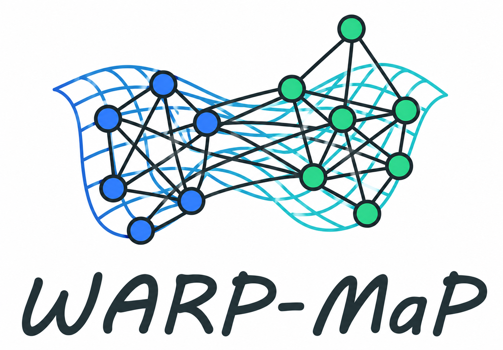
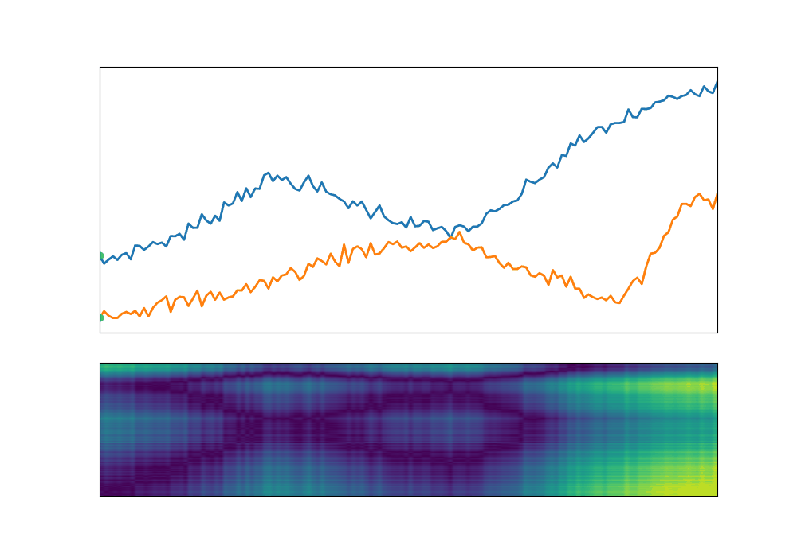
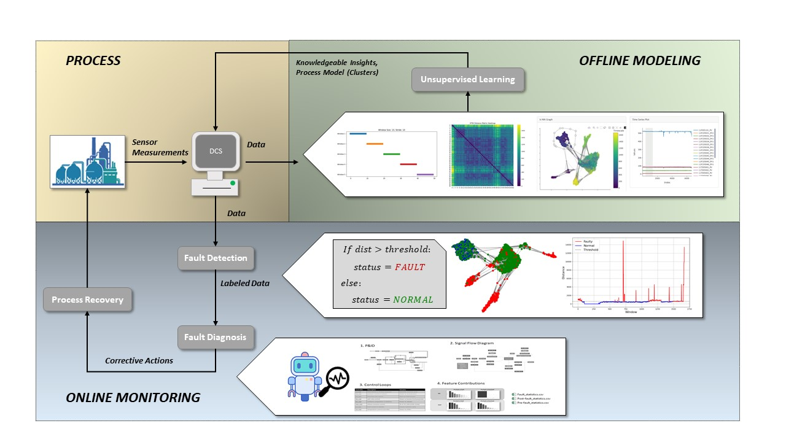
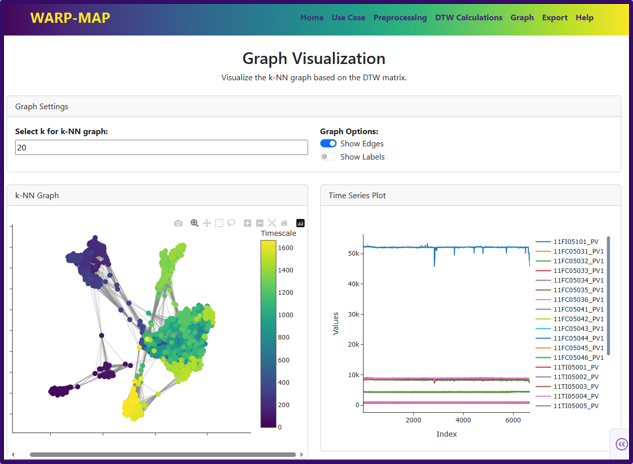

Overview
Based on Dynamic Time Warping
Utilizing the Dynamic Time Warping (DTW) distance metric, WARP-MaP captures the temporal relationships between time series data. By analyzing the relationships between different time series, WARP-MaP can identify patterns and trends that are not immediately apparent.
Capabilities
Unsupervised Process Insights
Similar to dimensionality reduction techniques, WARP-MaP can be used to visualize and analyze complex time series data in a lower-dimensional space.
The DTW distances are compared, k-NN graphs are constructed, and physics-based graph layouts separate the time series data.

Framework
Unsupervised Insights and Online Process Monitoring
The graphs generated by WARP-MaP can be then be used for online process monitoring. Adaptive thresholding techniques and agent-based diagnosis have been developed to help expand the lifecycle of the models and provide root cause analysis for faults.

Software
Easy and Intuitive GUI
WARP-MaP features an easy-to-use graphical interface that allows users to explore their time series data. Users can interact with the cluster visualizations, to obtain insights about the underlying processes and identify potential issues or anomalies.